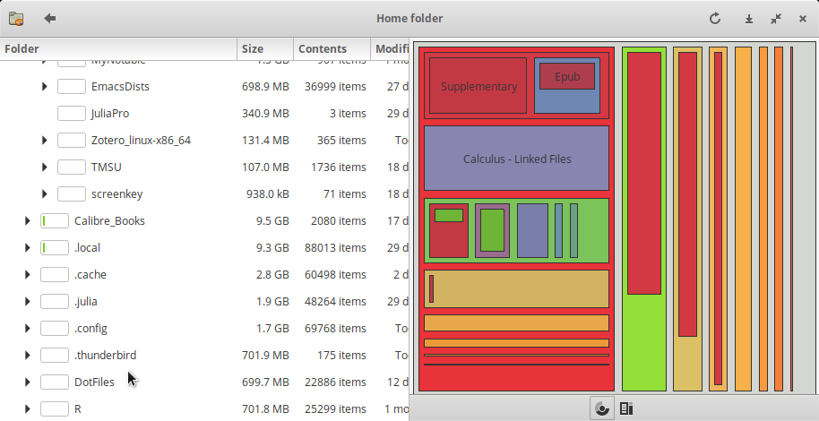
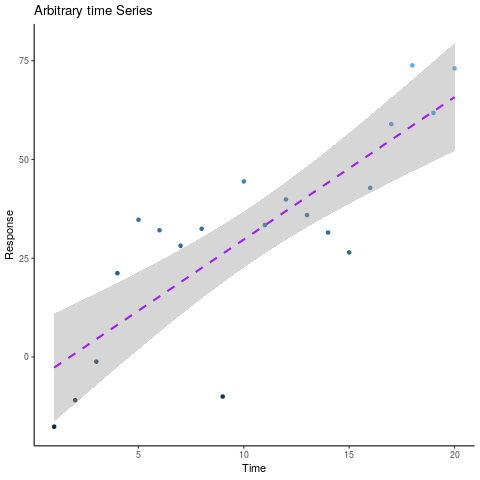
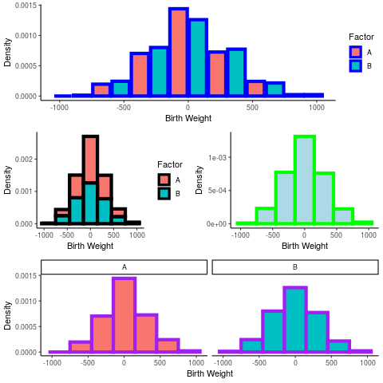
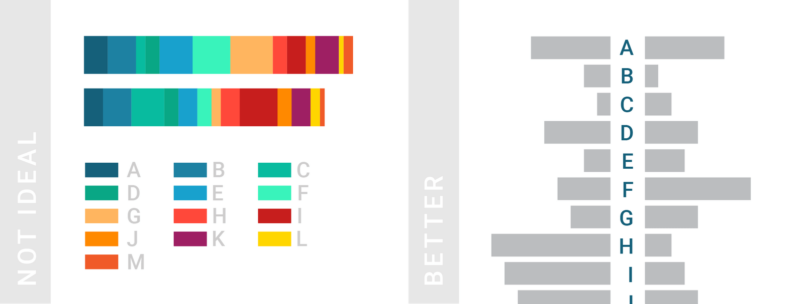
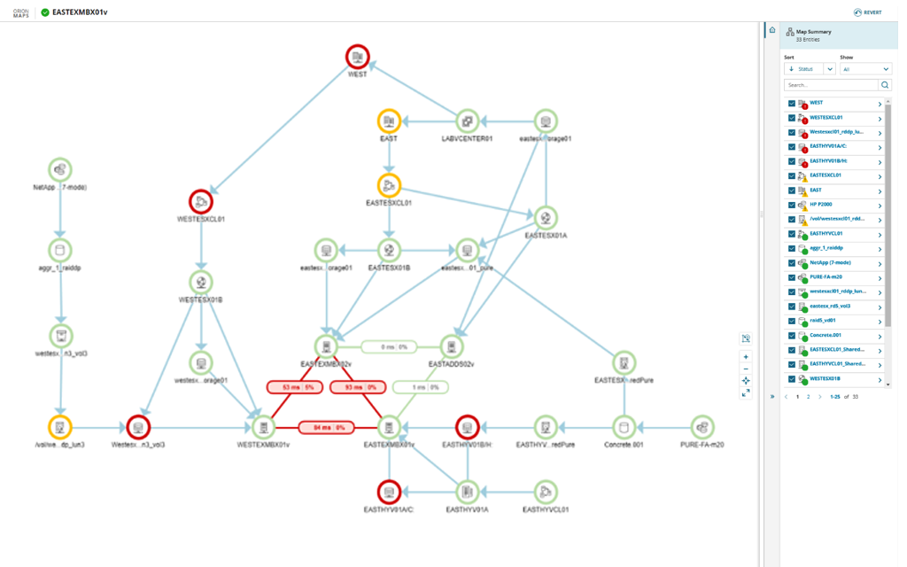

Visual Analytics
Table of Contents
- HouseKeeping
- Textbooks
- (Wk 1) Introduction to Data Visualisation
- References
- (Wk 2) Human Visual Perception
- (Wk 3) Relational Data Visualisation (Part I) wk3
- (Wk 4) Relational Data Visualisation (Part I) wk4
- DONE (5) Multi-Dimensional Data 1 wk5
- DONE (6) Multi-dimensional Data 2 wk6
- TODO (6) Data Camp Data Viz wk6 DataCamp
- DONE (7) Spatio-Temporal Data wk7
- TODO Data Camp; Interactive Plotly wk7 DataCamp
- DONE (5) Multi-Dimensional Data 1 wk5
- DONE (6) Multi-dimensional Data 2 wk6
- DONE (7) Spatio-Temporal Data wk7
- TODO (8) Interaction wk8
- TODO (Wk9) Break
- TODO (9) Visual Analytics wk10
- TODO (10) Using Data Vis to Analyse 1 wk11
- TODO (11) Using Data Vis to Analyse 2 wk12
- TODO (12) Using Data Vis to Analyse 3 wk13
- TODO (13) Final Quiz wk14
- DONE Assignment 1
- TODO Assignment 2
- Final Exam
- Exporting wk3
- References
HouseKeeping
Choosing Between Org and Markdown
This unit won’t necessarily be all inside R so I think the greater
versatility of org-mode will keep me more organised and allow me to be more
versatile.
I will use org-mode for this unit as a form of evaluation but md for the
others (because it’s easier to spin=/=knit the others directly into md
without doing a:
xclip -o -selection clipboard | pandoc -f markdown -t org | xclip -selectoin clipboard
Class Material ATTACH
The Material for Class is located here:
Textbooks
the textbooks are located in this folder:
(Wk 1) Introduction to Data Visualisation
Lecture
Housekeeping
Three will be two report
Basically all you need to do is:
- two reports
- quizz
Shouldn’t be too hard to get a HD.
Visualisation
Faster computers means more visuals
Nomenclature
- Graphics
- images using a computer
- Animation
- graphics objects movement techniques
- Visualisation
- Exploring, transforming, and viewing data as graphics objects.
Tutorial
Using Zathura
When using Zathura the copied text will be placed in the primary * register
not the + register, so paste it in with " * p.
Question 1
- Problem
Visit the website: http://www.visualcomplexity.com/vc/. Have a close look at the available visualisation techniques. In your opinion, which techniques are among the most useful? Or which one is the most pretty visual display? Explain and justify your preference. Note: there is no right or wrong answer in this question.
- Working
This Visual from the Google AI blog highlighting the important features detected by a neural network is a unique insight into the predictive modelling technique. It is not easy to understand the behaviour of a Neural Network and this visual offers a uniqe insight that could not easily be understood:
/2020-03-04_20-04-32_image00.jpg)
This Visual however is arguably one of the most visually striking because of the vibrant colour choice:
Question 2
- Problem
Explore the online demo: http://graphs.gapminder.org/world/. What have you discovered or found from the visualization of the “Wealth and Health of Nations data set”? E.g. is there any correlation between GDP and Life Expectancy? etc.
- Working
There is a clear positive correlation between income and life expectancy, other features that are readily observable are:
- Regions
It can be observed that Europe is a wealthy region (Yellow) while Africa and Asia are poor regions (cyan, red))
This could be further observed to be a function of distance from the equator, generally regions lose to the equator like Europe, UK, USA are quite wealthy where as regions nearer the equator are more likely to be impovrished.
Exceptions to this are:
- Australia due to the rich resources such as coal/uranium and the head start in education owing to the European Descent.
- Russia is impovrished because the October Revolutions that followed the first
World War greatly modified there economy relative to the rest of Europe, this decayed into authoritarianism and eventually extreme wealth inequality (with the rise of homelessness and oligarchs) following the collapse of the Soviet Union at the end of the cold-war.
This could be a functoin of temperature, a higher temperature may lead to :
- increased spread of bacterial disease
- increased perishability of food
- Population
It isn’t possible to say much about the influence population has because the population is measured by region without taking account of size (e.g. China is quite large while Vietnam is relatively small) or habitability (e.g. Japan is very mountainous and hard to farm or ranch on).
This is made more difficult because the income is measured per person but the population is not the relative space that person might enjoy (i.e. the population density), the GDP per country rather than capita might be more instructive.
- Time Trends
It appears that Europe (and Japan) have always enjoyed a higher GDP per capita while asia and Africa appear to lag in this respect.
Other than the “reshuffling” caused by the Great Depression, WW I, WW II and the collapse of the soviet union Europe has always enjoyed a higher GDP hence a higher life expectancy.
During the first two world wars (with the exception of Russia and Poland respectively, for obvious reasons) it appears that the influence of currency on life expectancy became even stronger, somewhat unfortunate for other regions given that these were European wars. The great depression also showed a similar effect on this correlation, going from a linear trend to an exponential.
- China as an Exception
China appears to not follow a correlation between GDP and Life Expectancy until the new milennia, life expectancy rises following the second world war despite no change in GDP per Capita.
In the 70’s China begins to follow this trend moving in a diagonal fashion indicative of a correlation, this is presumably due to manufacturing exported to China perhaps due to the development of the micro-processor in the US.
In the 2000’s China began to improve GDP per capita more significantly, perhaps due to free market policies, and followed a trend where GDP per capita would strongly correlated with life expectancy.
- Regions
Question 3
- Problem
Using a search engine, explore 3 applications/projects/tools that use visualisations. You are required to write a short summary about the applications/projects/tools. Why do you think they are significant? What are good and bad about these applications/projects/tools? Etc.
- Working
- Gnome’s Baobab / WinDirStat / KDirStat
Gnome’ Baobab, KDirStat and WinDirStat are disk usage analysers for Gnome, KDE and Windows respectively.


- Significance
All three tools use a descending list of directories with a bar chart indicating the proportion of disk space consumed by that directory, to the right is a graphic shosing this distribution.
- Good Design
All three tools have correctly implement an ordered list and bar chart, making it easy to understand and manage disk space on a system.
Gnome’s Baobab uses a ring chart with a popup overlay to describe the corresponding directory.
This choice of graph makes it easy to understand which directories are consuming the most space while still having an overview of the structure of the directories, the popup prevents the graph from becoming too busy and showing unnecessary information.
The ring chart will also re-centre following a selection of a directory allowing deeply nested structures to be understood easily.
- Bad Design
Unfourtunately KDirstat and Windirstat only offer treemap visualisations, this choice of graph is vastly inferior to a ring chart because it can only clearly show a certain amount of information at an overview, it is difficult do understand deeply nested folder structures they won’t re-generate the plot without rescanning the drive.
- Significance
- GitHub Visualizer
http://ghv.artzub.com/#repo=ranger-assets&climit=100&user=ranger
The Github Visualiser is a way of visualising the proportionate activity of various repositiories of various projects.
- Significance
This provides a novel way to understand the:
- relative popularity of repos
- The language most composing a repo / project
- How Active a project is generally and over time.
- Good Design
Using Bubbles to illustrate the is the overall share of a repo in a project provides a quick understanding at a glance.
Using a Time Series Chart over time is an easy way to show trends.
- Bad Design
The visualisation is far too busy to understand what is going on, for instance the size of the bubbles are not made clear, are they popularity, size, frequency of commits or frequency of clones / pulls of the repo?
For instance the visualisatoin of one of my favourite pieces of software Ranger is such that I can infer nothing from it other than the fact that the web page is written in HTML and the project is written in python, which is totally obvious and not particularly helpful to get a deeper understanding of the Ranger project as opposed to say the Midnight Commander Project, although the visualisation for Midnight Commander is significantly better and so this may be a scaling issue.
- Significance
- Cancer Graphic
This Plot attached here shows the attributes most likely to cause cancer:
cd /tmp #wget "http://web.archive.org/web/20140801035734/http://publications.cancerresearchuk.org/downloads/product/CS_POSTER_ATTRIB.pdf" command -v pdftoppm >/dev/null 2>&1 || { echo >&2 "command -v foo >/dev/null 2>&1 || { echo >&2 "I require pdftoppm but its not installed. Aborting."; exit 1; }I require foo but it's not installed. Aborting."; exit 1; } pdftoppm CS_POSTER_ATTRIB.pdf CS_POSTER_ATTRIB -png mv CS_POSTER*png ~/Notes/Org/Attachments/Statistics/ ls ~/Notes/Org/Attachments/Statistics/CS_POSTER_ATT*png
- Significance
This visualisation is significant because it effectively describes both the magnitude and interaction of various risk factors and behaviours on the probability of developing cancer.
Statistically this can be a very difficult thing to describe and explain but this graphic very clearly shows what to look out or
- Good Design
Having a key in the centre of the graph makes it very easy to determine what the individual elements of the visualisation mean.
The relative size of individual risk factors means that at a galnce it is very easy to determine risk factors for cancer.
- Bad Design
The graph unfourtunately is a little busy but this doesn’t appear to be in a way that is disproportionate to the amount of information conveyed.
- Inferences
An interesting component of this visualisation is that it clearly shows interactions of various items, for example the following are large to moderate risk factors for cancer generaly:
- Overweight (BMI > 25 kg / m\(^2\), distninct from obesity which is $≈ > 30)
- Inactivity
While HRT is a very small risk factor for all types of cancer.
This clearly illustrates that HRT may be medically appropriate in men despite the historical belive that such treamtent was correlated with prostate cancer in men 1. Recent studies suggest that this might not be the case 2 and HRT is (somewhat obviously) correlated with increased physical activity, weight loss 3 and general health metrics 4.
This visualisation clearly shows that this treatment might generally lower the risk of cancer in men and provides a simple way to convey complex interactions between attributes and the complex statistics involved in this type of research in a way that clearly shows the important facts of the matter..
Moreover this plot also only shows HRT as a risk factor in cancers that tend to overwhelmingly affect women, a distinction that is very important in that area of medical science.
- Significance
- Gnome’s Baobab / WinDirStat / KDirStat
Question 4
- Problem
For the following visualisations, in your opinion, are they good or bad; Justify the answer:
- Working
- Plot A
This plot is overly busy but also not very descriptive, meaning at a glance it is not possible to determine what the differences between different regions actually are.
Upon closer inspection it is not clear what the bar charts are trying to illustrate, clearly the venn diagram is trying to illustrate the proportion of communication and overlap, relative to thhe number of users. This is an interesting way to try and show the interactions between the different communication strategies but the choice of a Venn diagram was misguided. A venn diagram can only represent 3 sets with circles 1 and this has seemingly artificially restricted the number of potential behavriou types that the plot has tried to convey to such an extent that they may as well be disregarded entirely because they are just not descriptive enough to understand.
Interestingly Eastern countries use a combination of content/messges while western countries tend to use or the other, this could be related to the pictographical written laguage implemented by Eastern / Asian Countries and could lead to insights on human behaviour, unfourtunately the plot does not clearly describe the meaning of the colours and so no inferences can be easily made.
Moreover the size of the circles are relative to the total number of users, this is somewhat misleading because the plot shows that 33% of the USA uses Social Media while only 15% of China uses social media, countries/regions are not uniformally distributed or constructed so choosing to use regions as a delimiter when using absolute size of users is potentially misleading. This is partially addressed however by the Global Social Network penetration bar chart below the plot.
- Plot B

- The amount of text overlayed on this graph makes it difficult to read.
- The Growth rate of the publication should not be represented as a line because
it indicates some type of continuous connection between the universities, it should be represented as either another column or ideally a seperate time series plot should be produced:
- Such a plot should show the market share and allow the growth rate to be
interpreted from the slope of the line in an organic fashion, that way the different universities could have both market share and growth rate compared between each other without trying to mentally visualise a cumullative summation.
- Plot A
Question 5
Visualisation of the CoronaVirus:
- Problem
Optional: If you still have time, play around this website to see how visualization help to find patterns: http://rocs.hu-berlin.de/viz/sgb/ (Coronavirus Geographic and Network visualisations)
- Working
References
Bibliography
Bibliography
:unsrt
(Wk 2) Human Visual Perception
Refer to:t
Lecture ATTACH
Refer to the lecture slides Here and the required readings:
The Tutorial is here
Last Lecture
Good Visualisations are subjective to a degree, but there are basic rules that can be taken from psychology.
Module Outline
- Perception and Cognition
- Human Vision
- Colour
- Humans can recognise 8 colours at a time so use no more than 10 at a time
- Ideally use \(7\pm2\)
- Humans can recognise 8 colours at a time so use no more than 10 at a time
- Gestalt Laws
- Visual Encoding
Human Vision
What you see depends when you look at something you’re looking at something depends on what you know about. What we see depends on our goals and expectations.
Humans are good at relative value judgements but poor at absolute judgements, whereas computers are the opposite, our goal is to leverage those differences.
Colour Vision ATTACH
Humans can only identify about 8 colours on a plot, so try to use \(7\pm2\) and less than 10, so for example, look at the following:

Figure 8: Very Busy Plot

There’s just too much going on to figure out what’s going on, whereas look at ColorBrewer:

Preattentive Processing
Humans analyse images very rapidly, on the order of 200 ms, it’s quite accurate and processed ’in parallel’ by a low level form of consciousness. This occurs before a person pays attention and is independent of distraction, The opposite of doing a where’s waldo.
This can be aided by highlighting things in colour for example if I had a bunch of numbers:
sample(1:9, replace = TRUE, size = 30)
How many 3’s are in there? whereas if one was highlighted:
: [1] *3* 9 8 9 1 1 9 6 2 1 2 2 4 9 7 5 *3* 8 6 5 5 6 3 5 2 1 1 8 7 7
They can be rapidly identified.
Visualisation Theory
Read the following article for the tutorial
Gestalt Principle
German psycholoogists in the early 1900’s attempted to understand perception and formed the Gestalt School of Psychology (Gestalt is german for shape/form)
_Human_Visual_Perception/2020-03-18_18-24-42_screenshot.png)
Visual Encoding
Effective Encoding of Data Mackinlay 1986 will be in tutorial 2

Evaluating a Visualisation
In order to evaluate a visualisation, consider the following (taken from here)
- Expressiveness
- Do the mappings show the facts and only the facts?
- Are visual mappings consistent? (e.g., respect color mappings)
- Do the mappings show the facts and only the facts?
- Effectiveness
- Are perceptually effective encodings used?
- Are the most important data mapped to the most effective visual variables?
- Cognitive Load (Efficiency)
- Are there extraneous (unmapped) visual elements?
- Data Transformation
- Are transformations (filter, sort, derive, aggregate) appropriate?
- Guides (Non-Data Elements)
- Descriptive, consistent: Title, Label, Caption, Source, Annotations
- Meaningful references: Gridlines, Legend
Potential Assignment resources
This Visualisation is potentially something that I could use for one of the assignments.
Tutorial Tutorial
The Tutorial is here
All Exercises
Tutorial Exercises:
- What are the differences between perception and cognition?
- Why human vision is important for data analysis? What are the pros and cons of using human visual system versus machine or automated analysis?
- Why colours are important in visualisation?
- List at least 5 main things that we should be aware when using colours in visualisation.
- Using a search engine, explore 3 good visualisations that use colours to represent information. Why are the colours used effectively in these visualisations?
- Test your eye with colours: http://enchroma.com/test/instructions/
- Why do you think pre-attentive processing is important in visualisation? Can we combine features (e.g. colour, size and shape) to enhance pre-attentive analysis?
- What are the main aspects of Gestalt Laws?
- Read the slide “Effective Encoding of Data” in Lecture Note 2 (https://www.lucypark.kr/courses/2015-ba/visualization1.html), if a dataset has quantitative value, what 5 most important attributes or encoding should we consider? Similarly, if a dataset has nominal value, what 5 most important attributes or encoding should we consider?
- Read the following article: http://www.csc.ncsu.edu/faculty/healey/PP/index.html
Question 1
- 1. What are the differences between perception and cognition?
That basic distinction between pereption and cognition is that perception is tied to observation and sensation whereas cognition is related to information is related to the understanding and processing of ideas.
- Perception
Perception is identifying and understanding a sensory input, such as perceiving:
- an angle as obtuse or acute
- an object to be round or sharp by touch or sight
- an accent to be British, German, Chinese etc. by sound.
- an object to be falling off the table.
Perception is inherently dependent on experience, for example a person without exposure may not be able to perceive differences in accent.
It is unlikely that two different people will perceive things in the exact same way.
Generally perception is not something done consciously.
- Cognition
Cognition is processing information in an analytical way, working through a problem using prior training, it is done consciously.
Examples of cognition include:
- Determing the shape of a plot follows a certain model (e.g. polynomial, exponential/logarithmic, ARIMA, White Noise, etc.)
- Recognising an object to be a 12 mm nut from brake caliper as opposed to a small metallic object.
- Deciding that a person probably spent time in particular countries or regions given the languages they speak and accent they have.
- Determining that an object that is falling can be modelled with calculus.
Cognition depends on training, the majority of people can learn to work through a problem in a particular way.
Question 2
- 2. Why human vision is important for data analysis? What are the pros and cons of using human visual system versus machine or automated analysis?
Human vision is important for data analysis because often times there is too much data to understand just by looking at it. More over inferences from that data often cannot be made without visualising or summarising it.
Often it is possible to perceive change by looking at a visualisation but not possible when looking at raw data, for example look at the following plot: than trying to analytically derive a process, for example the following is easy to perceive:
library(tidyverse) x <- 1:20 y <- x*3+2 + rnorm(length(x), 0, 15) data <- data.frame(x,y) ggplot(data, aes(x = x, y = y, col = y)) + geom_point() + guides(col = FALSE) + theme_classic() + stat_smooth(method = "lm", lty = 2, col = "purple") + labs(title = "Arbitrary time Series", x = "Time", y = "Response")

An individual can clearly perceive that there is a linear trend with a rate of about 3 and upon closer inspection the standard error shading shows that the data is roughly \(\pm\) 15.
Looking at the raw data however:
| 1 | 31.2 |
| 2 | 10.5 |
| 3 | 21 |
| 4 | 34.3 |
| 5 | 18 |
| 6 | -0.7 |
It would only be possible to determine that the rate is indeed linear as opposed to polynomial by performing a statistical test and the rate would need be determined Analytically by considering the residual:
\begin{align} w_0&=\frac{\sum_{i=1}^{n}[y_i]}{n}+\frac{w_1\sum_{i=1}^{n}[x_i]}{n} \label{valw0}\\ w_1&=\frac{\sum_{i=1}^{n}[x_iy_i]-\frac{\sum_{n}^{i=1}[x_i]\sum_{n}^{i=1}[y_i]}{n}}{[\sum_{i=1}^{n}[(x_i)^2]+\frac{(\sum_{i=1}^{n}[x_i])^2}{n}]} \end{align}Humans are good at relative value judgements but poor at absolute judgements, whereas computers are the opposite, our goal is to leverage those differences to our advantage.
- Human Visual System and Automated Analysis
The pros and cons of Human Perception and Automated Analysis are best highlighted by considering the difficulties of unsupervised learning in the realm of Machine Learning.
Unsupervised Machine Learning algorithms such as clustering and PCA (in 2 and 3 dimensions obviously) are very easily performed by humans, but implementing such algorithms automatically and analytically can be quite complex and in some cases resource intensive.
This is very similar to the proximity Gestalt law discussed in question 8 below at No description for this link.
An advantage to the Human visual system is that the analysis can be done rapidly and requires no prior programming and maybe to a degree a human can be influenced quite rapidly in how the data is analysed or perceived whereas programming a machine learning algorithm or even a deductive algorithm can be complex and time consuming.
The advantage to using Automated analysis and algorithms is that an algorithm:
- is unbiased to the origins or nature of the data
- can be extended to disjoint, large data that might have patterns outside what humans would be expected to recognise
- can be extended to multiple dimensions
- For example using KNN analysis might involve computing distances in higher dimensions
- Or interpreting data with many variables, PCA can `flatten` out variables that don’t significantly contribute to the variance of the response.
- Summary
- Humans can make rapid and accurate relative judgements but these judements are
susceptible to bias and influence.
- Machines can make unbiased consistent judgements based on an algorithm (or
atleast a machine learning algorithm) but cannot out of the box make a relative value judgement without human guidance.
Question 3
- 3. Why colours are important in visualisation?
Colours are important because they can be used to illustrate a discrete or continuous dimension of data, this is particularly useful for comparing different relationships as they relate to different populations.
Question 4
- 4. List at least 5 main things that we should be aware when using colours in visualisation.
- (1) Number of Colours
Humans can only identify about 8 colours on a plot, so try to use \(7\pm2\) and less than 10.
- (2) Data Type
Data may be ordered and may be continuous or discrete:
Ordered Unordered Continuous Colours should use a smooth divergent/sequential pallet NA Discrete Colours should use a small number of sequential colours Colour pallet should be a small number of distinct colours |
If data is continuous (and / or ordinal) then colours that follow a pattern should be used in order to illustrate that pattern, for example:
library(RColorBrewer) library(tidyverse) # colorRampPalette(brewer.pal(9, "Blues"))(100) %>% plot() # my_cols <- brewer.pal(7,"Greens") # par(pty = "s", mai = c(0.1, 0.1, 0.4, 0.1)) # display.brewer.pal(3,"Accent") display.brewer.pal(9,"Blues")

If data is discrete then discrete and distinct colours should be used, if that data is also non-ordinal then those colours should avoid having a pattern, for example:
library(RColorBrewer) library(tidyverse) # colorRampPalette(brewer.pal(9, "Blues"))(100) %>% plot() # my_cols <- brewer.pal(7,"Greens") # par(pty = "s", mai = c(0.1, 0.1, 0.4, 0.1)) display.brewer.pal(3,"Accent") # display.brewer.pal(9,"Blues")

- (3) Viewing Medium
A visualisation may have different levels of perceived brightness depending on how it’s viewed, for example a visualisation made on a pc with a black background (i.e. dark mode) may lead to a plot looking overly saturated, if that plot was printed the distinction between various factors may not be clear in graph.
- (4) Contrast
If a plot is converted to greyscale in order to print, there may be insufficient contrast to perceive differences, this can be avoided if attention is paid to ensure good ’seperation’ between elements regardless of contrast.
- (5) edge enhancement
using colours to highlight edges may make a plot harder or easier to read, for example consider the following histograms:
library(tidyverse) library(gridExtra) a <- rnorm(1000, 3, 300) b <- rbinom(length(a), size = 1, prob = 0.3) birthwt <- data.frame("A" = a, "B" = b ) birthwt_pretty <- birthwt birthwt_pretty$B <- ifelse(birthwt$B, "A", "B") hist <- ggplot(birthwt_pretty, aes(x = A, fill = B, y = ..density..)) + theme_classic() + labs(x = "Birth Weight", y = "Density") + guides(fill = guide_legend("Factor")) plots <- list() plots[[1]] <- hist + geom_histogram(position = "dodge2", col = "blue", binwidth = 300, lwd = 1) plots[[2]] <- hist + geom_histogram(position = "dodge2", col = "red", binwidth = 300, lwd = 1) plots[[3]] <- hist + geom_histogram(position = "dodge2", col = "black", binwidth = 300, lwd = 1) plots[[4]] <- hist + geom_histogram(position = "dodge2", binwidth = 300, lwd = 1) layout <- matrix(c(1:4), byrow = TRUE, nrow = 2) grid.arrange(grobs = plots, layout_matrix = layout)

This effect can be made more pronounced when the plots have different scales an are arranged relative to each other:
a <- rnorm(1000, 3, 300) b <- rbinom(length(a), size = 1, prob = 0.3) birthwt <- data.frame("A" = a, "B" = b ) birthwt_pretty <- birthwt birthwt_pretty$B <- ifelse(birthwt$B, "A", "B") hist <- ggplot(birthwt_pretty, aes(x = A, fill = B, y = ..density..)) + theme_classic() + labs(x = "Birth Weight", y = "Density") + guides(fill = guide_legend("Factor")) # hist + geom_histogram(position = "dodge2", col = "blue", binwidth = 300) plots <- list() # Dodge plots[[1]] <- hist + geom_histogram(position = "dodge2", col = "blue", binwidth = 300, lwd = 2) # Overlay plots[[2]] <- hist + geom_histogram(binwidth = 300, col = "black", lwd = 2) # Single Histogram plots[[3]] <- hist + geom_histogram(binwidth = 300, col = "green", aes(group = 1), fill = "lightblue", lwd = 2) # Facet Grid plots[[4]] <- hist + geom_histogram(binwidth = 300, col = "purple", lwd = 2) + facet_grid(. ~ B) + guides(fill = FALSE) layout <- matrix(c(1, 1, 2, 3, 4, 4), byrow = TRUE, nrow = 3) # arrangeGrob(grobs = plots, layout_matrix = layout) grid.arrange(grobs = plots, layout_matrix = layout)

Question 5
- 5. Using a search engine, explore 3 good visualisations that use colours to represent information. Why are the colours used effectively in these visualisations?
Further Information on correct colour choice in plots can be located:
And many good examples can be found on the RStudio Shiny Dashboard homepage.
- Pokemon dashboard
The Pokemon type dashboard uses colours effectively because it uses discrete and distinct colours to represent discrete variables.
The colour choices are an intelligent choice of sufficiently distinct colours that are also differently related to the information to make the plot easy to interpret.
The colours choses are also saturated enough to allow transperancy to be mapped to frequency and for the treemap to be sufficiently distinct.
- Nuclear Waste Sites
The Nuclear Waste Dashboard uses colour effectively because it uses a different colour pallette for the two types of plots which represent the number of sites in each category and the geographical location of any such site in that category.
Tying a colour to a variable is important to visualise data without confusing the intended audience.
- Neighbourhood Diversity
The Neighbourhood Diversity visualisation uses colour effectively because the colour choses is a continous sequential pallete increasing in saturation, this makes interpreting continuous data easier because the pallete has a one-to-one correspondence with the density of the observation.

- Using Colours
The following graphic is an exemplar graphic from DataQuest but it shows how it is often desirable to restructure a visualisation based on the data as opposed to overusing colours which can be difficult to interpret in high amounts.

Question 6
- 6. Test your eye with colours: http://enchroma.com/test/instructions/
I already know I’m slightly red-green colourblind, (Mild Protan), the test only confirms it, for instance I don’t see any number here:
_Human_Visual_Perception/2020-03-18_18-17-19_screenshot.png)
Question 7
- 7. Why do you think pre-attentive processing is important in visualisation? Can we combine features (e.g. colour, size and shape) to enhance pre-attentive analysis?
Pre-Attentive processing is important because it allows for a plot to be interpreted immediately.
A visualisation may be rendered less effective or not effective at all if it is unable to convey certain amounts of information rapidly, for instance if the cognitive load to interpret a pattern is too high, sub patterns or more complex patterns may be lost in the noise of the data.
Question 8
- Grouping
- Objects close together will be perceived as groups
- This is an example of humans performing something simple that is quite complex for machines.
- Objects close together will be perceived as groups
- Like Elements
- If elements are similar in features such as shape, colour or size they will
people are more ready to consider the data as grouped together
- This means it can be important to use techniques such as blurring and desaturating visualisations in order to remove or enhance such distinctions as appropriate.
- If elements are similar in features such as shape, colour or size they will
people are more ready to consider the data as grouped together
- Connected Elements
- Data That is connected in some way (by a line, curve or border) will give the effect of creating clusters or groups in data
Question 9
- 9. Read the slide “Effective Encoding of Data” in Lecture Note 2 (https://www.lucypark.kr/courses/2015-ba/visualization1.html), if a dataset has quantitative value, what 5 most important attributes or encoding should we consider? Similarly, if a dataset has nominal value, what 5 most important attributes or encoding should we consider?
Question 10
- 10. Read the following article: http://www.csc.ncsu.edu/faculty/healey/PP/index.html
(Wk 3) Relational Data Visualisation (Part I) wk3
DONE Lecture
Refer to:
Relational Data Visualisation – Part I
Introduction to Graph Visualisation
Tree Visualisation
Connection Approach
Enclosure Approach
Connection+Enclosure Approach
Tree Graphs
Tree graphs show heirarcy so for example:
- Dendrogram from heirarchical clustering
- Family tree
- Organisation Mapping plot
Sunburst tree maps are also known as ring charts as shown before at No description for this link
Trees in Org Mode
Drawing Graphics Technologies
PlantUML
I’m looking at this resource, there is also Official Documentation
Add
plantumlto the babel list- annoyingly in vnote it is referred to as
puml
(org-babel-do-load-languages 'org-babel-load-languages '((plantuml . t))) ; this line activates dot
- annoyingly in vnote it is referred to as
- Download the latest
plantuml.jarfrom here- Make sure to make it executable and to save it somewhere executable
- Install
plantuml-modemode from MELPA Add the following to your
~/.emacs.d/init.el(setq org-plantuml-jar-path (expand-file-name "/bin/plantuml.jar")) (add-to-list 'org-src-lang-modes '("plantuml" . plantuml)) (org-babel-do-load-languages 'org-babel-load-languages '((plantuml . t)))
Test the output
- Examples
There are many examples located here
Mermaid
Install
mermaid.cli, refer to the GitHub:npm install -g mermaid.cli
Install the Spacemacs layer by cloning this repo
git clone https://github.com/arnm/mermaid-layer ~/.emacs.d/private/mermaid- If not using Spacemacs it may be necessary to install
ob-mermaidand
mermaid-modefrom MELPA usingM-x package-install. as described here.- If not using Spacemacs it may be necessary to install
Add
ob-mermaidto the org list here:(org-babel-do-load-languages 'org-babel-load-languages '((R . t) (latex . t) (python . t) (dot . t) (mermaid . t) (gnuplot . t) (java . t) (sed . t) (shell . t) (mathematica . t) (emacs-lisp . t)))
- Add the mermaid layer to spacemacs
Find out where the mermaid command line tool (i.e.
mmdc) is installed:which mmdc sudo ln (which mmdc) /bin/mmdc
Tell
org-modewheremmdcis installed:(setq ob-mermaid-cli-path "/bin/mmdc")
- Test Mermaid using the following syntax
- Or another example
- Supported properties
file- Output file. It should be either svg, png or pdf.width- Width of the page. Optional.height- Height of the page. Optional.theme- Theme of the chart, could be default, forest, dark or neutral. Optional.background-color- Background color. Example: transparent, red, ’#F0F0F0’. Optional.mermaid-config-file- JSON configuration file for mermaid. Optional.css-file- CSS file for the page. Optional.pupeteer-config-file- JSON configuration file for puppeteer. Optional.
FlowchartJS
Tools for making graphs graph_viz
by graphs we mean like network graphs or trees.
Assigment 1 is a treemap and/or network
- Gephi
- Nice Modern Open Graph Viz Platform (graph as in nework)
- DOT
- Plot.ly
- CytoScape
- Open Network Data Integration
- PlantUML
- TikZ
- Mermaid.js
- Flowchart.JS
- draw io
- prefuse
- jgraph
- Java Graph Visualisation
- Jung
- Java Universal Netowk Graph
- Proceus
- D3.js
- A very comprehensive JS library for Data Viz
- Open Source
- igraph in R
- Examples
- lkadsjf
Also checkout this d3 r gallery example
DONE Tutorial
Question 1
_Relational_Data_Visualisation_(Part_I)/2020-03-25_16-53-01_screenshot.png)
Figure 24: Graph to Fix
- Possible Improvements
- minimizing the intersectoin of edges
- Using Colours to show the distinction between nodes
Possible tools that can be used are:
- Generated DOT Graph
The easiest way to generate graph is to use the DOT library with PlantUML:
Expand Code Click Here
# #+beginsrc plantuml :output both :file ./Attachments/VisualAnalytics/DOTGraphwk4q1.png :exports both
@startdot strict digraph graphName { concentrate=true fillcolor=green color=blue style="filled, rounded" A [shape=box, fillcolor="#a31621", style="rounded, filled"] edge [ arrowhead="none" ]; node[ fontname="Fira Code", shape="square", fixedsize=false, style=rounded ]; # A -> B [dir="both"] A -> B A -> C A -> G B [shape=box, fillcolor="#bfdbf7", style="rounded, filled"] B -> F B -> C B -> H B -> H C [shape=box, fillcolor="#053c5e", style="rounded, filled"] C -> A C -> B C -> D D [shape=box, fillcolor="#1f7a8c", style="rounded, filled"] D -> G D -> C E [shape=box, fillcolor="#eaf4d3", style="rounded, filled"] E -> H E -> A F [shape=box, fillcolor="#0f5257", style="rounded, filled"] F -> A F -> B G [shape=box, fillcolor="#0b3142", style="rounded, filled"] G -> A G -> D H [shape=box, fillcolor="#9c92a3", style="rounded, filled", arrowType="dot"] H -> E [arrowType="dot"] H -> B } @enddot
Figure 25: DOT graph created using PlantUML
- Sequence Diagram
Plant UML can also create a sequence diagram which is a different type of visualisation but is still an interesting way to visualise the relationships.
#+begin_src javascript :exports code @startuml A-->B A-->C A-->G B-->F B-->C B-->H B-->H C-->A C-->B C-->D D-->G D-->C E-->H E-->A F-->A F-->B G-->A G-->D H-->E H-->B @endumlFigure 26: DOT graph created using PlantUML
Question 2
Explore and find 3 good and 3 bad examples of graphs on the Internet, including a justification for each example.
- Good Examples
- Solar Winds
The proceeding image shown in figure 27 is an exemplar graph from a commercial piece of software called Solar Winds2, it is an effective plot because:
- The nodes are colour coded
- The nodes use symbols as a way to express an independent categorical variable
- The edges do not overlap
- there is adequate spacing throughout the graph

Figure 27: Exemplar plot for Solar Winds product
- Standord Paper Visualisation
The Proceeding Plot shown in figure 28 is a graph showing feature construction in a paper written at Standford University 5 presumably produced in TikZ, it is an effective graph because:
- the colours to denote the two main discrete variables are distinct
- The edges don’t overlap
- The Nodes tesalate in a way that makes the graph easy to read
- Where a quasi-node is used to branch an edge to facilitate node tesallation it is denoted by a slight bulge making it clear to delineate the edges

Figure 28: Correlation Network Diagram of
mtcarsdata - Unix Development
- Solar Winds
- Bad Examples
- igraph Library Example
The following plot shown in figure 29 from the R graph gallery3 is bad example of a graph because the edges are hard to discern the labels are not clearly delineated, the edges cross over unnecessarily and the thickness of the edges is too small

Figure 29: Correlation Network Diagram of
mtcarsdata - Research chronology
The proceeding graph is an exemplar plot of a service known as Research Chronology4.
It is a poor graph because:
- There are too many overlaps between edges
- There are too many colours to uniquely identify the discrete variables
- The plot needs to be further spaced
Figure 30: Graph Depiction of research chronology
- Mapping the BlogoSphere
The proceeding plot shown in figure 30 is an attempt to map the relationships between blogs, it is a poor graph simply because it is too dense, the graph needs to be expanded and trimmed significantly before it could be effective.

- igraph Library Example
Question 3
What is a tree structure? Provide 3 examples of a tree structure in real life.
A tree structure is a general type of general graph, it will contain no cycles and will tend to have edges with direction, there will be a special designated root vertex.
- File System
The most natural type of tree structure is the directory structure of a a computer, for example the tree structure of the provided
DOI_Treecan be visualisedcd ~/Dropbox/Studies/2020Autumn/Visual_Analytics/03_Material/Lecture3Materials4Students/DOI_Tree tree. ├── Data │ ├── 2811.xml │ ├── 3137_filesystem.xml │ ├── 6814_filesystem.xml │ ├── CategoryAustralia_6254.txt │ ├── CategoryAustralia_6254.xml │ ├── CategoryAustralia.xlsx │ ├── CategoryUSA_20289.xml │ ├── CategoryUSA.txt │ ├── CategoryUSA.xlsx │ ├── Safety events ontology New.txt │ ├── Safety events ontology New.xml │ └── treeml.dtd ├── data.xml ├── DOITreeVis.jar ├── META-INF │ └── MANIFEST.MF └── ReadMe.txt 2 directories, 16 files
- Tree Machine Learning Technique
A more nuanced form of a tree structure is the machine learning technique whereby input variables are seperated to correspond to binned output variables in an effort to model the behaviour of a system without using regression. This technique can be used for continuous and discrete data, so for example the following code returns the plot shown in figure 1:
library(tree) library(tidyverse) if(require('pacman')){ library('pacman') }else{ install.packages('pacman') library('pacman') } pacman::p_load(caret, scales, ggplot2, rmarkdown, shiny, ISLR, class, BiocManager, corrplot, plotly, tidyverse, latex2exp, stringr, reshape2, cowplot, ggpubr, rstudioapi, wesanderson, RColorBrewer, colorspace, gridExtra, grid, car, boot, colourpicker, tree, ggtree, mise, rpart, rpart.plot, knitr, MASS, magrittr) CSeat.tb <- as_tibble(Carseats) thresh <- (mean(CSeat.tb$Sales)+0.5*sd(CSeat.tb$Sales)) %>% round() CSeat.tb$CatSales <- ifelse(CSeat.tb$Sales > thresh, "High", "Low") CSeat.tb$CatSales <- factor(x = CSeat.tb$CatSales, levels = c("Low", "High"), ordered = TRUE) CSeat.tb <- CSeat.tb[,c(12, 2:11)] CatSalesModTree.rpart <- rpart(formula = CatSales ~ ., data = CSeat.tb) rpart.plot(CatSalesModTree.rpart, box.palette="OrGy", shadow.col="gray", nn=TRUE)
Figure 33: Example of Tree Plot using Built in Data
- Genetic Lineage
Genetic Lineage is another example of a tree structure graph, for example a the tree of life would look something to the effect of:
Figure 34: Example of Tree of life
Question 4
Explore the tree visualization techniques at http://treevis.net/ . Identify 10 connection (node-linked diagram) techniques and 10 enclosure techniques.
- Techniques using connections or node links are:
- Generalized Pythagoras Trees (2014) by Fabian Beck
- StackTree Layout
- Career Tree
- Ordered Tree Drawing
- GeoReferenced Tree Layout
- Rhizome Navigation
- Quadratic Programming Layout
- Clustergram
- Perspective Mapping
- Planar Upward Drawing
- Techniques using Enclosure Techniques include
Question 5
Explore the visualizations of Treemap, DOITree and D&CTreemap from the demo systems. In your opinion, give the pros and cons of each technique.
Personal note, thank you so much for making these simple .jar files rather
than .exe’s I hate using wine and I’m glad these are cross platform applications.
- Treemap
The UI is very mouse heavy which makes it difficult to manipulate, the UI is also a little busy.
Overall though being able to double click through the enclosed regions to move through the bins and being able to change the partitioning method from strip to slice and dice makes it easy to manipulate.
- DOITree
Unfourtanetly I was unable to load the built in data sets I had created without having a crash, this was the output regardless:
prefuse.data.io.DataIOException: org.xml.sax.SAXParseException; lineNumber: 1; columnNumber: 1; Content is not allowed in prolog. at prefuse.data.io.TreeMLReader.readGraph(TreeMLReader.java:46) at prefuse.data.io.AbstractGraphReader.readGraph(AbstractGraphReader.java:33) at visualization.Visualizer.setVisualization(Visualizer.java:423) at visualization.Visualizer.openDataFileAction(Visualizer.java:407) at visualization.Visualizer.actionPerformed(Visualizer.java:103) at java.desktop/javax.swing.AbstractButton.fireActionPerformed(AbstractButton.java:1967) at java.desktop/javax.swing.AbstractButton$Handler.actionPerformed(AbstractButton.java:2308) at java.desktop/javax.swing.DefaultButtonModel.fireActionPerformed(DefaultButtonModel.java:405) at java.desktop/javax.swing.DefaultButtonModel.setPressed(DefaultButtonModel.java:262)
So overall I would say that a definite downside to this tool is that it is a little unstable (or very possibly I’m using the wrong java, I’m just using whatever my distro shipped with)
- D&C Treemap
The aestheticis very pleasant as shown in figure 35 but having to mouse over to determine the clusters is very inconvenient (and the font renders incorrectly on my system)

(Wk 4) Relational Data Visualisation (Part I) wk4
Refer to:
DONE Lecture
DONE Tutorial
Tutorial Exercises:
- What is the difference between a simple graph and a general graph?
- What type of forces can we use in force directed methods?
- What are the advantages of force directed methods? Can these methods be effective on large graphs (e.g. > 1000 nodes)?
- What are the common methods that are used to handle big graphs?
- List the 6 aesthetic criteria in graph drawing. In your opinion, which criteria is the most important for big graph visualization?
- Show the adjacency matrix for the following graphs
Question 1
What is the difference between a simple graph and a general graph?
A graph \(G\) is an ordered pair of two disjoint sets, one of which is the node/vertex set \(V\) and the other is a set of edges \(E\), if the set is with direction it may be described as an ordered triple in onrder to contain a set to describe direction \(\phi\). The graph would usually be denoted something to the effect of \(G(V,E)\). 6
So generally a graph might be quite complicated as shown in figure 36 below.
A Simple graph however:
- has no multi-edges, it is compressed in the sense that edges don’t double up
- Has no loops, i.e. no node is connected to itself
A simple graph is depicted in figure 37
Expand Code Click Here
# #+begin_src javascript :exports code
# #+begin_src javascript :exports code
@startdot
strict digraph graphName {
concentrate=false # This merges edges/lines
fillcolor=green
color=blue
A [shape=box, fillcolor="#a31621", style="rounded, filled"]
edge [
arrowhead="none"
];
node[
fontname="Fira Code",
shape="square",
fixedsize=false,
style=rounded
];
# A -> B [dir="both"]
A -> B
A -> C -> B -> A
A -> C
B [shape=box, fillcolor="#bfdbf7", style="rounded, filled"]
B -> F
B -> H
C [shape=box, fillcolor="#053c5e", style="rounded, filled"]
D [shape=box, fillcolor="#1f7a8c", style="rounded, filled"]
E [shape=box, fillcolor="#eaf4d3", style="rounded, filled"]
F [shape=box, fillcolor="#0f5257", style="rounded, filled"]
F -> B
G [shape=box, fillcolor="#0b3142", style="rounded, filled"]
G -> A
G -> D
G -> G
A -> A
H [shape=box, fillcolor="#9c92a3", style="rounded, filled", arrowType="dot"]
H -> E [arrowType="dot"]
H -> B
}
@enddot

Figure 36: Example of a graph generally, this graph is not simple because it has loops and multi-edges
Expand Code Click Here
# #+begin_src javascript :exports code
# #+begin_src javascript :exports code
@startdot
strict digraph graphName {
concentrate=false # This merges edges/lines
fillcolor=green
color=blue
A [shape=box, fillcolor="#a31621", style="rounded, filled"]
edge [
arrowhead="none"
];
node[
fontname="Fira Code",
shape="square",
fixedsize=false,
style=rounded
];
# A -> B [dir="both"]
A -> B
A -> C
C -> B
B [shape=box, fillcolor="#bfdbf7", style="rounded, filled"]
B -> F
C [shape=box, fillcolor="#053c5e", style="rounded, filled"]
D [shape=box, fillcolor="#1f7a8c", style="rounded, filled"]
E [shape=box, fillcolor="#eaf4d3", style="rounded, filled"]
F [shape=box, fillcolor="#0f5257", style="rounded, filled"]
G [shape=box, fillcolor="#0b3142", style="rounded, filled"]
G -> A
G -> D
H [shape=box, fillcolor="#9c92a3", style="rounded, filled", arrowType="dot"]
H -> E [arrowType="dot"]
H -> B
}
@enddot

Figure 37: Example of a Simple Graph
Question 2
- What type of forces can we use in force directed methods?
where force directed methods are used to visualise a graph the following forces may generally be used:
- Attractive Forces
- Repulsive Forces
These forces will generally act in the direction of edges with magnitude proportional to the path.
Other types of forces may act however, for example:
- A Centre of Gravity
- This will pullnodes into the centre of the visualisation
- Radial, concentric or horizontal magnetic fields
- Repulsive forses from the boundary to penalise distant nodes
Question 3
- What are the advantages of force directed methods? Can these methods be effective on large graphs (e.g. > 1000 nodes)?
The advantage to implementing force directed methods is that they have an aesthetically pleasing layout that has the potential to carry more information which may in turn support quicker interpretation by somebody trying to interpret the visual.
Force directed Methods may improve the capacity for the intended audience to implement pre-attentive processing (Wk2, Q7) when reviewing the visualisation, this is because force directed methods move similar nodes together into clusters, this grouping is a principle of the Gestalt laws (Wk2, Q8) known to increase the perception of discrete categories in visualisation. Laws/
Force Directed methods are easy to implement in the sense that some mathematical description of a rule set needs to be passed to a graphing utility and then the process is more or less automatic.
- Using Force Directed Methods on Large Graphs
For very large graphs force directed methods can become unwieldly, slow to compute and generally the output can be to a degree unpredictable.
So generally no, these methods are not effective for large graphs, however in saying that, they might still give an interesting overview of the data set.
Question 4
- What are the common methods that are used to handle big graphs?
The common methods to preview large graphs are:
- Structural Clustering
- Modifying the
- Abstraction and Aggregation
This is because too many data points are not necessarily practical to visualise, they may end up being perceived as a hairball.
- Structural Clustering
- Multilevel Approaches
One Method is to implement a form of dimension-reduction, this is an alorithm that essentially groups multiple nodes into a single cluster and then instead represents those clusters.
This can be visualised as levels of height, similar to a pyramid, each level increasing in height corresponds to a reduction in the number of nodes until eventually there would only be one node at the top, then the question simply becomes choosing the level that corresponds to the most effective Visualisation (this is somewhat similar to a dendrogram).
- Collapsible Nodes
Collapsible Nodes leverages the interactive capacity of computing devices to folder multiple nodes into a common root, this is similar to the directory structure of a computer, to visualise this compare the terminal output of the following:
tree -L 1 tree -L 2 tree -L 3
- Multilevel Approaches
- Abstraction / Aggregation
Abstraction and aggregation involves merging nodes into common nodes by a similar trait, for example instead of listing every single car manufacturer as seperate nodes, maybe it makes sense to seperate the nodes by the vehicle fuel type or the country of origin (so BMW, Mercedes, VW would become ’European Car’ and Dodge, Chrysler, Ford would become ’US Car’).
This (probably) requires human intervention to a degree in order to identify which aggregate terms are the most reasonable to the topic that the visualisation is being used for.
Question 5
- List the 6 aesthetic criteria in graph drawing. In your opinion, which criteria is the most important for big graph visualization?
Aesthetic criteria in graph drawings are:
- Minimising the intersection of edges
- Scaling the Edge length to make the size both effective and accurate
- Minimizing the Total Area used.
- Redusing the maximum edge length
- large discrepencies between edge lengths can make graphs look non-uniform which is not aesthetic and can be distracting.
- Uniform Edge Length
- Striving to keep edges within a reasonable range of values can help ’pull
the graph together’ so it looks like a single uniform graph
- Minimising the number of bends can stop the graph appearing too busy which can be distracting and make the graph hard to interpret.
Which criteria for an aesthetic graph is most relevant to a visualisation depends on the specific graph, but generally speaking minimising the intersection of edges can make for the most aesthetic improvement in a visualisation, this is because following lines can be a mentally taxing task.
Question 6
- Show the adjacency matrix for the following graphs
The Adjacency matrix for the graph shown in figure 3 is given by
Expand Code Click Here
# #+begin_src javascript :exports code
# #+begin_src javascript :exports code
@startdot
strict digraph graphName {
concentrate=true # This merges edges/lines
fillcolor=green
color=blue
A [shape=box, fillcolor="#a31621", style="rounded, filled"]
edge [
arrowhead="none"
];
node[
fontname="Fira Code",
shape="square",
fixedsize=false,
style=rounded
];
# A -> B [dir="both"]
A -> B
A -> C
A -> H
B [shape=box, fillcolor="#bfdbf7", style="rounded, filled"]
B -> A
B -> F
B -> H
C [shape=box, fillcolor="#053c5e", style="rounded, filled"]
C -> A
C -> H
C -> E
C -> G
D [shape=box, fillcolor="#1f7a8c", style="rounded, filled"]
D -> B
D -> F
D -> E
E [shape=box, fillcolor="#eaf4d3", style="rounded, filled"]
E -> C
E -> D
E -> G
F [shape=box, fillcolor="#0f5257", style="rounded, filled"]
F -> B
F -> D
F -> G
G [shape=box, fillcolor="#0b3142", style="rounded, filled"]
G -> C
G -> E
G -> F
H [shape=box, fillcolor="#9c92a3", style="rounded, filled", arrowType="dot"]
H -> A
H -> B
H -> C
}
@enddot

Figure 38: My attempt at reproducing the DOT graph from the Tutorial Sheet, this one isn’t as good, but it’s relationally equivalent.
| A | B | C | D | E | F | G | H | |
| A | 0 | 1 | 1 | 0 | 0 | 0 | 0 | 1 |
| B | A | 0 | 0 | 1 | 0 | 1 | 0 | 1 |
| C | 1 | 0 | 0 | 0 | 1 | 0 | 1 | 1 |
| D | 0 | 1 | 0 | 0 | 1 | 1 | 0 | 0 |
| E | 0 | 0 | 1 | 1 | 0 | 0 | 1 | 0 |
| F | 0 | 1 | 0 | 1 | 0 | 0 | 1 | 0 |
| G | 0 | 0 | 1 | 0 | 1 | 1 | 0 | 0 |
| H | 1 | 1 | 1 | 0 | 0 | 0 | 0 | 0 |
- Visualise the Adjacency Matrix
The Adjacency Matrix can be turned into vectors by using the following UltiSnips snippet in vim:
snippet vec ${1:var} <- c("${0:${VISUAL:/ /","/g}}") endsnippet snippet numvec ${1:var} <- c(${0:${VISUAL:/ /, /g}}) endsnippetHence putting this together in R in code listing 4 the following plot of the adjacency matrix shown in table 1 may be produced as shown in figure 1:
Expand Code Click Here
library(tidyverse) names <- c("A", "B", "C", "D", "E", "F", "G", "H") A <- c(0, 1, 1, 0, 0, 0, 0, 1) B <- c(1, 0, 0, 1, 0, 1, 0, 1) C <- c(1, 0, 0, 0, 1, 0, 1, 1) D <- c(0, 1, 0, 0, 1, 1, 0, 0) E <- c(0, 0, 1, 1, 0, 0, 1, 0) Fv <- c(0, 1, 0, 1, 0, 0, 1, 0) G <- c(0, 0, 1, 0, 1, 1, 0, 0) H <- c(1, 1, 1, 0, 0, 0, 0, 0) data <- matrix(data = c(A, B, C, D, E, Fv, G, H), nrow = 8, ncol = 8, byrow = TRUE) rownames(data) <- names colnames(data) <- names # Rotate matrix 90-degrees clockwise. rotate <- function(x) { t(apply(x, 2, rev)) } rotate_ACW <- function(x) { t(apply(x, 1, rev)) } # Create Column Names make_colnames <- function(matrL) { factor(paste("col", 1:ncol(matrL)), levels = paste("col", 1:ncol(matrL)), ordered = TRUE) } # Create Row Names make_rownames <- function(matrL) { factor(paste("row", 1:nrow(matrL)), levels = paste("row", 1:nrow(matrL)), ordered = TRUE) } # Create Row Names with reversed Order make_rownames <- function(matrL) { factor(paste("row", nrow(matrL):1), levels = paste("row", nrow(matrL):1), ordered = TRUE) } expand.grid_matrix <- function(mat) { data <- expand.grid("x" = LETTERS[1:8], "y" = rev(LETTERS[1:8])) data$z <- as.vector(rotate(mat)) data$z <- as.logical(data$z) return(data) } data <- expand.grid_matrix(data) ggplot(data, aes(x = x, y = y, fill =z)) + geom_tile() + labs(x = "", y = "", title = "Adjacency Matrix", fill = "Pair")

Question 7 ggnet
This GitPage Has a Tutorial on using ggnet
The Plotly library can be used to build a network graph. The dataset UKfaculty
contains relationships between members of a university in the UK.
The code in listing 5 produces the plot shown in figure 40
Expand Code Click Here
# Load Packages library(plotly) library(igraph) library(igraphdata) # Load the Data data("UKfaculty") # Set the Layout Type G <- upgrade_graph(UKfaculty) L <- layout.circle(G) # Create Vertices and Edges vs <- igraph::V(G) es <- as.data.frame(get.edgelist(G)) Nv <- length(vs) Ne <- length(es[1]$V1) # Crete Nodes Xn <- L[,1] Yn <- L[,2] network <- plot_ly(x = ~Xn, y = ~Yn, mode = "markers", text = vs$label, hoverinfo = "text") # Create Edges edge_shapes <- list() for(i in 1:Ne) { v0 <- es[i,]$V1 v1 <- es[i,]$V2 edge_shape = list( type = "line", line = list(color = "#030303", width = 0.3), x0 = Xn[v0], y0 = Yn[v0], x1 = Xn[v1], y1 = Yn[v1] ) edge_shapes[[i]] <- edge_shape } # Create Network axis <- list(title = "", showgrid = FALSE, showticklabels = FALSE, zeroline = FALSE) fig <- layout( network, title = 'UK Faculty', shapes = edge_shapes, xaxis = axis, yaxis = axis ) fig

Figure 40: Network Graph; Needs to be spread out and improved
DONE (6) Multi-dimensional Data 2 wk6
Lecture
- Today will focus on the heatmap and PCA Dimension Reduction.
- pixel based methods, data reduction
- clustering and dimension reduction
A heatmap is a graphical representation of data.
Tutorial
TODO (6) Data Camp Data Viz wk6 DataCamp
DONE (7) Spatio-Temporal Data wk7
SCHEDULED: DEADLINE:
Lecture
Tutorial
There was no tutorial for this lecture
TODO Data Camp; Interactive Plotly wk7 DataCamp
TODO Lecture
TODO Tutorial
DONE (5) Multi-Dimensional Data 1 wk5
Lecture
Tutorial
DONE (6) Multi-dimensional Data 2 wk6
Lecture
Tutorial
DONE (7) Spatio-Temporal Data wk7
Lecture
Tutorial (Optional)
TODO (8) Interaction wk8
Lecture
Tutorial
Question 1 ATTACH
What are the navigation strategies in information visualisation? Explain the difference of these strategies.
The strategies in information visualisation are:
- Zooming
- Zooming involves reducing the amount of context in the display of a visualisation, this can improve focus on a given proportion.
- Overview+Detail
- The Overview / Detail strategy involves showing an overview of the information simultaneous to a detailed view, seperated by a space, an example of this might be something like a Desktop Calendar.
- Focus+Context
- This technique involves integrating focus and context into a single display, usually by distortion. A common place example of this technique is tra
- Filtering
- This technique involves reducing the amount of context in the display through user interaction such as providing queries, an example of this is filtering in TabuViz by way of a query mapping.

Figure 41: Desktop Calendar Client

Figure 42: Diagram of City rail

Question 2
What are the different between geometric zooming and semantic zooming?
- Geometric Zooming
Geometric zooming involves enlarging an area of the content of avisualisation without any modification of the presentation of the information.
- Semantic Zooming
Semantic Zooming enlarges the focus section but changes the way in which the visualisation is presented, for example, taking a subtree of a treemap into it’s own visualisation would be an example of semantic zooming.
Question 3
What are the pros and cons of zooming versus focus+context?
The advantage to zooming is that it allows a focused view of the data without any distraction, this however means that it can difficult to understand the wider implications of a specific detail without the broader context of a visualisation.
The focus+context approach has the advantage that detailed information can be visualised in context of the entire visualisation, this however has the disadvantage that the view can be cluttered and appear noisy which may impede the focus of a user.
Question 4
Use TabuVis tool to open a tabular data set, performing filtering and zooming on the data set. Write some quick notes on the discovery or property of the visualisation or data set.
Question 5
In your opinion, what are the problems of zooming methods?
Zooming Methods don’t provide a broader overview of the data and require user interaction in order to understand the visualiation, ideally a user should be able to take information from a visualisation without needing to ’work for it’.
When zooming is applied incorrectly, gaining information from a plot can be difficult and it may make a user feel like they are only seeing the data ’through a window’
Question 6
Using the search engine to find 5 examples of visualisations with focus+context or overview+detail.
- Git Time Machine for Atom
The Git Time Machine package for the Atom Text editor integrates on overview of all the past changes to a file with a timeline on the bottom illustraiting those changes by way of a bubble chart, this is shown in figure 44.
This is an example of an overview+detail approach because the diff report shows the detail of the plot while the lower portion provides the context in which the changes occured.

Figure 44: Screenshot of the Git Time Machine Package for Atom
- Flight Radar 24 ATTACH
The Flight Radar 24 Visualisation provides an image with a slider that allows a comparison between two scatterplots of aeroplane locations, as shown in figure 45.
Figure 45: Visualisation of Airline Travel
- Pandemic International ATTACH
The pandemic international COVID-19 visualisation, shown in figure 46 is an example of an overview+detail visualisation because detail regarding the specific case numbers is provided next to an overview of the total number of cases over time.
Figure 46: Daily Reported Cases of COVID-19
- Evernote Visualiser ATTACH
This EverNote Visualiser provides an overview+content visualisation of a users notes in evernote by providing a snapshot of the content of a note and an overview of the interconnections of that note, this is shown in figure 47
Figure 47: Evernote Visualiser providing Overview+Content of notes.
- Git Visualizer ATTACH
The GitUp git visualiser provides a visualisation of the canges in a
gitrepository as shown in figure 48 and is an example of an overview+content visualiser because it provides an detailed explanation of the changes of a commit next to a visual overlay of the overall changes.Figure 48: GitUp Git Visualiser
Question 7 ATTACH
Use TabuVis tool to open a tabular data set, performing multiple views on the data set. Write some quick notes on the discovery or property of the visualisation or data set.
The Iris Data appears to have a positive correlation between the 4-variables across species as can bee seen in figur 49.
Figure 49: Plot from TabuViz
Question 8 ATTACH
Explore the Tableau software in the lab.
I’m familiar with R and a little bit of Python so I’ll probably use those, I have however created an account as shown in figure 50.
Figure 50: Activation Screen for Tablaeu Website.
TODO (Wk9) Break
Lecture
Tutorial
TODO (9) Visual Analytics wk10
Lecture
Tutorial
- Open Source Packages for Data Viz
- Java Script
- D3 is a comprehensive JS library utilising SVG HTML5 and CSS to get Data Viz on the web
- Revolution Analytics - R
- RGL Package is good for 3d in R?
- HTML Widgets allow building interactive visualisations
- Python
TODO (10) Using Data Vis to Analyse 1 wk11
Lecture
Tutorial
TODO (11) Using Data Vis to Analyse 2 wk12
Lecture
Tutorial
TODO (12) Using Data Vis to Analyse 3 wk13
Lecture
Tutorial
TODO (13) Final Quiz wk14
Lecture
Tutorial
DONE Assignment 1
Attachments ATTACH
Resources
DONE Decide on Data to Analyse
- Potential Ideas
- Model the Corona virus is a bit obvious
- Modelling interlinked files in org-mode could be fun but also a bit old hat
- She really really like baobab but I don’t think I can use that
- Analysing Wikipedia could be really fun
- Planetary systems would be really nice
- Could I do something with NMR?
- DataSets
Instead of a dendrogram or treemap lets do social data,
That looks promising, let’s do that.
Also you could just make a dendrogram or even simply use your folder structure and make a treemap.
- Org Parser
An Org parser lke Orga (JS) or OrgParse.py Could give interesting Info on links maybe?
- Org Parser
- Program
- D3
- Tidy Tree
- SunBurst
- I really like this
- Could I do a hack to create a file structure out of nodes
- Then you could use ranger (and tmsu) and Baobab
- Could I do a hack to create a file structure out of nodes
- I really like this
- General Heirarchical
- Gephi
- iGraph inside R
- Look Here Generally
- D3
DONE Submit through Vuws
TODO Assignment 2
Attachments
Information
- maybe only choose 1 dataset?
- Use any tools, R or python or whatever.
Final Exam
- 1 hour
- 50 Questions
- Questions are from Lecture Notes and Tutorial
- 100 marks, each 2 marks, \(2 \times 20\% = 0.4\), each question worth 0.4
Exporting wk3
HTML Files
When exporting HTML Files with org export the images won’t be embedded,
you can either:
- use
pandoc --self-containedand figure out how to make the
mathjax or katex self-contained (or use mathml)
- either use pandoc to convert the org file outright
- use pandoc to redo the HTML file
- embed the images as base64
- Make the HTML Stand-alone using pandoc
DONE Making the HTML Standalone
How do i make stand alone HTML’s in org-mode or is there an easy way to publish them to a blog with gitpages.
So the base64 Image method worked, definitely, but I need a more foolproof way, either get org-publish working or get a seperate repo
One easy method to do this is to export the HTML, host a local python server with python3 -m http.server 8923, go to http://0.0.0.0:8923 and then use the firefox SingleFile extension.
Read this Reddit Post on making Blog Posts
It refers to This Blog Post
Pandoc Workaround
Code something like the following will make the HTML self-contained, but, it will break the references to a degree, making the format less nice.
pandoc scratch.html --self-contained -c ~/Dropbox/profiles/Templates/CSS/github-pandoc.css -o scratch2.html
TODO Make Function; Embedding Images as Base 64 Evening
So this Reddit post provides this method to embed images as base64, the code
suggests that it should work for jpg, png and svg:
(defun replace-in-string (what with in) (replace-regexp-in-string (regexp-quote what) with in nil 'literal)) (defun org-html--format-image (source attributes info) (progn (setq source (replace-in-string "%20" " " source)) (format "<img src=\"data:image/%s;base64,%s\"%s />" (or (file-name-extension source) "") (base64-encode-string (with-temp-buffer (insert-file-contents-literally source) (buffer-string))) (file-name-nondirectory source)) ))
It actually works quite well, but, it’s really slow and resource intensive, also this would require the inline CSS method that I’m already using
TODO Tools for self contained HTML
The following tools can be used for self-contained html (it may be necessary to create as server using python3 -m http.server 8332):
- Remi’s Inliner
JavaScript
- Trix’s webpage2HTML
Python
- Y2Z’s monolith
Rust, on /SnapCraft/
Using JavaScript Inliner Tool
This might try and embed all links though, which will not be fun, the advante to
the base 64 elisp solution being that it only touches images.
This inliner tool is really effective, meaning I could create a standalone HTML, copy it to the repo and then push the repo thusly:
# https://github.com/remy/inliner # npm install -g inliner inliner ./VisualAnalytics.html > ~/Documents/ryangreenup.github.io/VisualAnalytics.html cd ~/Documents/ryangreenup.github.io git add -A; git commit -m "Pushed from emacs"; git push
Unfourtunately this breaks the org-mode java script.
| Pros | Cons |
| Nice Standardised Solution | Breaks Org-JS |
| Fast | Doesn’t seem to work properly |
- Python Loop to do everything
This script from this reddit post doesn’t work, I could probably do it in bash, but for reference sake:
# https://github.com/remy/inliner # npm install -g inliner # Not as sudo, use NVM import glob import os import subprocess # html_file_list = glob.glob("/home/user/Dropbox/org/*.html") html_file_list = glob.glob("~/Notes/Org/*.html") export_dir = "/tmp/public_html/" for one_file in html_file_list: print(one_file) command = 'inliner ' + one_file + ' > ' + export_dir + os.path.basename(one_file) subprocess.call(command, shell=True)
Embedding Images my own script
So for svg images I use the following with TeX, I can’t quite remember why but I
think it was something like pandoc doesn’t like TikZ.
in bash you can use this to get the BASE64 encoding of an image:
base64 ~/Pictures/background.jpg
I think I would need to modify this very slightly to accomidate
#!/bin/bash #svgfile=9d9af7b10ca33c3d1bf4e525a1e32af0a2dc5a9a.svg htmlfile=$1 if [ "$1" == "-h" ]; then echo "`basename $0` <SVG> <HTML>" exit 0 fi # for consistency recreate the html file t2h doseReport.tex github-pandoc.css > t2h.log 2> /dev/null rm -f t2h.log ls *svg >> pics.txt for value in $(cat pics.txt) do svgfile=$value #Specify the specific Regex to remove oldtext="<p><img src=\"$svgfile\" \/><\/p>" # This might have been causing issues #oldtext="$svgfile" #capture the text of the svg svtext="$(cat $svgfile)" # This won't work echo $(sed '' $svgfile) # this won't work either, we #need to escape special characters newtext=$(sed 's@[/\&]@\\&@g;$!s/$/\\/' $svgfile) #newtext="==========" # https://unix.stackexchange.com/a/152192 #basically the 's@[/\&]@\\&@g;$!s/$/\\/' is necessary to #escape all the misbehaved characters # Identify the line in the html # sed -i -e "s/$oldtext/====/g" doseReport.html # Replace the line sed -i -e "s/$oldtext/$newtext/g" $htmlfile # Remove the svg rm $svgfile done rm pics.txt
DONE Throwing on Github
Publishing Pathway
- New Attempt ATTACH
The general layout for a publishing function can be found In the Manual5 but basically the idea is that regex is used to specify include and exclude, you can make multiple functions and you can have one function that calls multiple others, or, if you’re organised, you can have one that uses regex as necessary.
- So Now I’ve realise, it is necessary to export the entire project for it to work properly and copy over images.
- Also it seems that the CSS must have a relative path and/or be copied into the
target directory beforehand
- It’s actually Necessary to have Multiple functions, because you will need to
have a different
:publishing-functionfor different file types.;; (remove-hook 'org-mode-hook 'toggle-org-custom-inline-style) ;; (toggle-org-custom-inline-style) (setq org-publish-project-alist '( ("orgfiles" :base-directory "~/Notes/Org/" :base-extension "org" :publishing-directory "/tmp/public_html/" :publishing-function org-html-publish-to-html :exclude "./journal.org" ;; regexp ;; :include ["VisualAnalytics.org"] ;; regexp ;; everything included otherwise :headline-levels 3 :recursive t :section-numbers nil :with-toc t :html-head "<link rel=\"stylesheet\" href=\"./style.css\" type=\"text/css\"/>" :html-preamble t) ("images" :base-directory "~/Notes/Org/" :base-extension "jpg\\|gif\\|png" :exclude ".*ltximg.*" ;; regexp :recursive t :publishing-directory "/tmp/public_html/" :publishing-function org-publish-attachment) ("other" :base-directory "~/Notes/Org/" :base-extension "css\\|el\\|pdf\\|rmd\\|r\\|R\\|sh" :recursive t :publishing-directory "/tmp/public_html/" :publishing-function org-publish-attachment) ("website" :components ("orgfiles" "images" "other")) ("ClassWork" :components ("Autumn2020" "images" "other"))))
- Just Including Certain Notes
Remember to push the github and you can test with python3 -m http.server 8003 -bind 192.1680.0.1
;; (remove-hook 'org-mode-hook 'toggle-org-custom-inline-style) ;; (toggle-org-custom-inline-style) (setq org-publish-project-alist '( ("Aut_orgfiles" :base-directory "~/Notes/Org/" :base-extension "org" :publishing-directory "~/Documents/ryangreenup.github.io/Org-Publish/" :publishing-function org-html-publish-to-html :exclude ".*" ;; Regexp :include ("./VisualAnalytics.org" "ThinkingAboutData.org" "analytic_programming.org" "Social_Web_Analytics.org") ;; regexp ;; everything included otherwise :headline-levels 3 :recursive t :section-numbers nil :with-toc t :html-head "<link rel=\"stylesheet\" href=\"./style.css\" type=\"text/css\"/>" :html-preamble t) ("Aut_images" :base-directory "~/Notes/Org/" :base-extension "jpg\\|gif\\|png" :exclude ".*ltximg.*" ;; regexp :recursive t :publishing-directory "~/Documents/ryangreenup.github.io/Org-Publish/" :publishing-function org-publish-attachment) ("Aut_other" :base-directory "~/Notes/Org/" :base-extension "css\\|el\\|pdf\\|rmd\\|r\\|R\\|sh" :exclude "journal.*" ;; Regexp :recursive t :publishing-directory "~/Documents/ryangreenup.github.io/Org-Publish/" :publishing-function org-publish-attachment) ("Autumn" :components ("Aut_orgfiles" "Aut_images" "Aut_other"))))
- Using include and exclude
In order
:base-extensionand:excludeshould first be specified as regex and then:includeshould be used as a list of the form("item1" "item2")You definitely want to read the manual6 .
- Links and attachments
The benefit of attaching files is that the directory of attachments can be browsed, manipulated and moved from within emacs which is really nice.
Linking to attachments has some quirks though.
attachment: file.pdf;- If you make a link to a file with this link abbreviation it will not work upon HTML publish, which is really annoying.
att: file.pdf;- if you define as shown at code listing 1 6 as described on the Mailing List7 then the link will work upon HTML publish and it will move when the attachment directory is moved, but to enter it you won’t have autocomplete.
[[./Attachments/my.pdf]];- will work on HTML publish but will obviously break when/if the attachment directory is moved.
(setq org-link-abbrev-alist '(("att" . org-attach-expand-link)))
- Including Relative CSS
For all use cases the css more or less must be in the same directory as the org file. when you get sick of that just use org-toggle-custom-inline-style.
I’m also going to make one to embed as Base 64
- Unchanged Files
If a file has been removed from the publishing directory but the file has not changed, org-mode may not regenerate the file, in order to force the issue instead use a prefix command
C-u M-x org-publish, it would also be possible to use the command shown in listing 7(org-publish "project name" t)
Previewing HTML
This is fairly easy, start a python server and then the index will automatically display:
python3 -m http.server -8367 #-bind 192.168.0.132
then open in in firefox:
firefox 0.0.0.0:8351